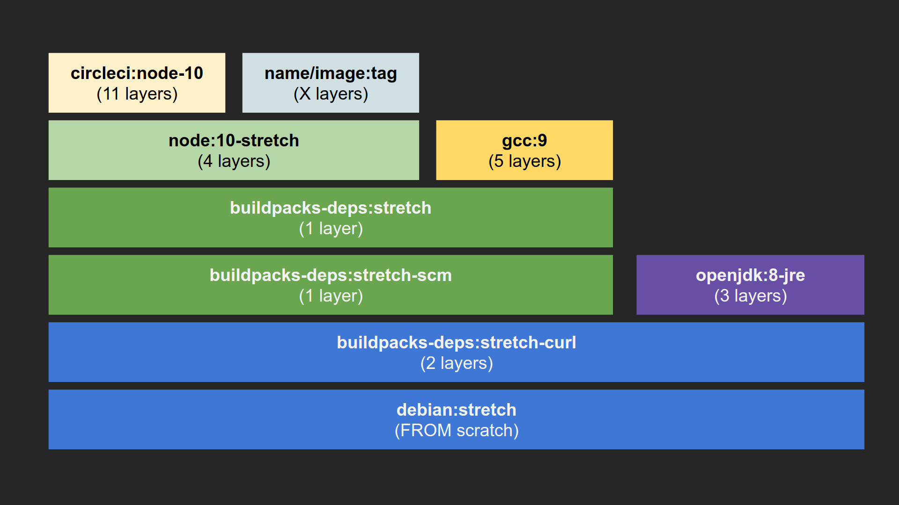

# Spring Boot dans un container <br> <br> ## Outils et pratiques <br> #### Pivotal Paris #### 04 / 07 / 2019
## Daniel Garnier-Moiroux <br> <br> <br> Software Engineer @ Pivotal Labs [@Kehrlann](https://twitter.com/Kehrlann) [github.com/kehrlann/spring-boot-in-a-container](https://github.com/kehrlann/spring-boot-in-a-container)
### Qui utilise des containers en production aujourd'hui ?
# Choix de l'image de base
## Dockerfile, v1.0 ```docker FROM ubuntu:latest RUN apt update && apt install openjdk-8-jre -y COPY spring-petclinic/target/spring-petclinic-*.jar /app.jar ENTRYPOINT ["java","-jar","/app.jar"] ```
## Un peu mieux... ```docker FROM openjdk:8-jre COPY spring-petclinic/target/spring-petclinic-*.jar /app.jar ENTRYPOINT ["java","-jar","/app.jar"] ```
## Plus léger ! ```docker FROM openjdk:8-jre-alpine COPY spring-petclinic/target/spring-petclinic-*.jar /app.jar ENTRYPOINT ["java","-jar","/app.jar"] ```
## Encore moins de surface ```docker FROM gcr.io/distroless/java COPY spring-petclinic/target/spring-petclinic-*.jar /app.jar CMD ["/app.jar"] ``` (... mais un peu plus gros en taille)
## Image de base - take-aways - Container != VM - Utiliser une image spécialisée - Penser à la taille (ex: alpine) - Penser à la sécurité (ex: distroless)
# Interlude
## Virtualisation <img src="images/virtualization.png" />
## Containers
## Les layers: comment ça marche
## Les layers **FROM** réutilise toutes les layers de l'image de base. Les layers sont créées par : - **RUN** - **COPY** - **ADD**
## Les layers: réutilisation 
## Revenons à nos moutons ... ```docker FROM gcr.io/distroless/java COPY spring-petclinic/target/spring-petclinic-*.jar /app.jar CMD ["/app.jar"] ```
## Layering: Extraction des dépendances ```bash DEPS_FOLDER=$PWD/spring-petclinic/target/dependency mkdir -p "$DEPS_FOLDER" cd "$DEPS_FOLDER" jar -xf ../*.jar ```
## Layering: Création de l'image ```docker FROM gcr.io/distroless/java ARG DEPENDENCY=spring-petclinic/target/dependency COPY ${DEPENDENCY}/BOOT-INF/lib /app/lib COPY ${DEPENDENCY}/META-INF /app/META-INF COPY ${DEPENDENCY}/BOOT-INF/classes /app ENTRYPOINT [ "java", "-cp", "app:app/lib/*", "org.springframework.samples.petclinic.PetClinicApplication" ] ```
## Construire ses images - take-aways - Choisir son image de base (taille, sécurité, ...) - Séparer dépendances & code dans des layers séparées
# Build process
## Multi-stage builds ```docker # BUILD SOURCE FROM openjdk:8-jdk-alpine as build WORKDIR /workspace/spring-petclinic/ COPY spring-petclinic/mvnw . COPY spring-petclinic/.mvn .mvn COPY spring-petclinic/pom.xml . COPY spring-petclinic/src src RUN ./mvnw package -DskipTests RUN mkdir -p target/dependency && (cd target/dependency; jar -xf ../*.jar) # BUILD IMAGE FROM gcr.io/distroless/java ARG DEPENDENCY=/workspace/spring-petclinic/target/dependency COPY --from=build ${DEPENDENCY}/BOOT-INF/lib /app/lib COPY --from=build ${DEPENDENCY}/META-INF /app/META-INF COPY --from=build ${DEPENDENCY}/BOOT-INF/classes /app ENTRYPOINT [ "java", "-cp", "app:app/lib/*", "org.springframework.samples.petclinic.PetClinicApplication" ] ```
## Multi-stage builds, with caching ```docker # BUILD SOURCE FROM openjdk:8-jdk-alpine as build WORKDIR /workspace/spring-petclinic/ COPY spring-petclinic/mvnw . COPY spring-petclinic/.mvn .mvn COPY spring-petclinic/pom.xml . COPY spring-petclinic/src src RUN --mount=type=cache,target=/root/.m2 ./mvnw clean package -DskipTests RUN mkdir -p target/dependency && (cd target/dependency; jar -xf ../*.jar) # BUILD IMAGE FROM gcr.io/distroless/java ARG DEPENDENCY=/workspace/spring-petclinic/target/dependency COPY --from=build ${DEPENDENCY}/BOOT-INF/lib /app/lib COPY --from=build ${DEPENDENCY}/META-INF /app/META-INF COPY --from=build ${DEPENDENCY}/BOOT-INF/classes /app ENTRYPOINT [ "java", "-cp", "app:app/lib/*", "org.springframework.samples.petclinic.PetClinicApplication" ] ```
# Really ?
## Google Jib Dans votre `pom.xml`, il suffit d'ajouter: ```xml <build> [...] <plugins> <plugin> <groupId>com.google.cloud.tools</groupId> <artifactId>jib-maven-plugin</artifactId> <version>1.3.0</version> <configuration> <to> <image>kehrlann/pet-clinic:jib</image> </to> </configuration> </plugin> </plugins> </build> ``` Puis, run: ```bash $ mvn compile jib:build ``` Voire: ```bash $ mvn compile jib:dockerBuild ```
## Also, Cloud-Native buildpacks Build from source ! <br> ```bash $ pack build kehrlann/pet-clinic:pack-cf-cn-buildpack --builder=cloudfoundry/cnb ``` <br> https://buildpacks.io
## Build process - take-aways - Le process de build, c'est important - Mais si on peut éviter d'y penser, c'est mieux - Standardiser la création d'images, c'est top
## A votre tour ! <br> https://spring.io/guides/topicals/spring-boot-docker/ https://github.com/Kehrlann/spring-boot-in-a-container/ <br> Faites moi signe: @Kehrlann